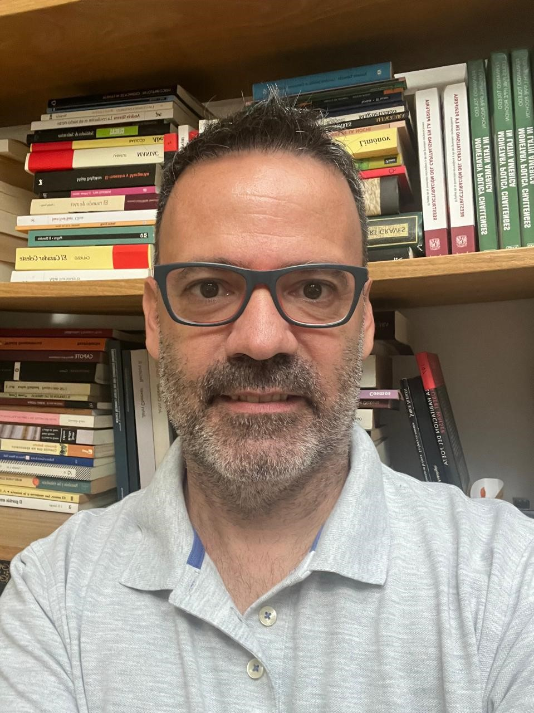

Economista con más de 20 años de experiencia asesorando directorios de bancos centrales y ministerios de economía en política monetaria, finanzas internacionales y desarrollo estructural. Trayectoria comprobada en la traducción de datos macroeconómicos complejos en decisiones de alto impacto y en la publicación de investigaciones influyentes en revistas líderes (Springer, Elsevier, Taylor & Francis). Experto en construcción de modelos macroeconómicos y liderazgo de equipos multidisciplinarios para asesorar a organismos multilaterales (CEPAL, OIT, ALADI, OLADE). Fluidez en español e inglés, con amplia experiencia presentando hallazgos en foros globales (World Inequality Conference).